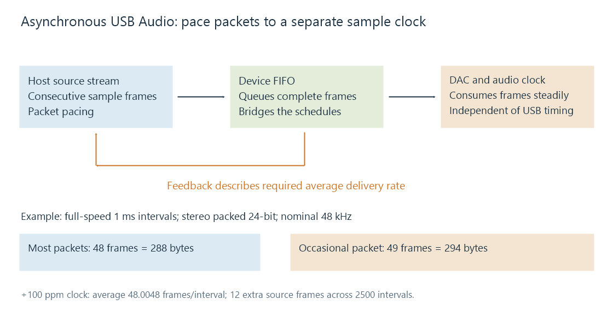

USB Audio
USB Audio defines discoverable audio streams and controls, with packet delivery synchronized to the sample clock used by the device.
A USB audio device presents audio streams and controls that the host can discover. A player can deliver samples through an operating-system audio API, while a class driver turns those samples into transfers for a DAC, headset or interface.
USB Audio Class version and USB bus speed are separate properties. Audio Class 2.0 describes an audio-device protocol and its descriptors; “USB 2.0” describes the bus. A device's actual stream format depends on the capabilities it advertises and the configuration the host selects.
The descriptors describe the available stream
The device identifies supported channel arrangements, sample representations, endpoints and clock relationships. The host selects a supported streaming setting and supplies audio in that format.
A 24-bit sample can occupy three bytes or a larger container, depending on the declared format. Stereo packed into three bytes per sample uses six bytes per PCM sample frame. The packet arithmetic must use that actual container layout.
For an illustrative full-speed stream transferring once per 1 ms interval at 48 kHz:
48,000 frames/s × 0.001 s = 48 sample frames
48 frames × 2 channels × 3 bytes = 288 bytes
This is a chosen packet schedule. High-speed transfers can use microframe-based intervals, and a device can select another supported interval or layout.
USB timing and the audio clock need to agree on average
USB transfers occur on the bus schedule. The DAC consumes sample frames according to its audio clock. A buffer bridges the two.
An asynchronous audio endpoint uses a sample clock independent of USB timing. Feedback lets the host pace data to match the device's consumption. A synchronous endpoint locks its clock to USB timing; an adaptive endpoint adjusts its clock behavior to the incoming data rate.

The word “asynchronous” describes a clock relationship. It does not mean that the stream has no timing, that the host has abandoned flow control, or that audible samples are delivered at arbitrary instants.
A clock running 100 parts per million fast
Suppose a nominal 48 kHz device actually consumes 48,004.8 frames per second, 100 ppm faster than 48,000. Per 1 ms USB interval, it needs an average of 48.0048 frames.
A packet cannot contain a fractional sample frame. The host can therefore send mostly 48-frame packets and occasional 49-frame packets. Over 2,500 intervals, the required total is:
48.0048 × 2,500 = 120,012 frames
48 × 2,500 = 120,000 frames
difference = 12 additional frames over 2.5 seconds
Those twelve extra frames come from the continuing source stream. They are not twelve invented duplicates. In the six-byte example, a 48-frame packet is 288 bytes and a 49-frame packet is 294 bytes.
Pacing complete, consecutive frames into variable packet sizes does not itself perform resampling. If two long-running streams with different physical clocks must remain synchronized, an additional clock-matching strategy may be needed elsewhere in the system.
Buffers and the final output
The operating system, USB stack and device can each buffer audio. Packet interval alone does not establish the total delay from an app producing a sample to the DAC presenting it. A low-latency configuration must still tolerate scheduling variation and maintain enough queued data.
For an Emby device comparison, record the client device, selected USB output, negotiated rate/channel/sample format and any software processing. A media server delivering to a remote client is upstream of that client's USB connection.